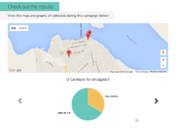

On June 21st, middle and high school students in Brazil’s northern city of Santarém took to the streets in the city center to raise awareness about a crisis with school lunches. The event was organized by the Student Pact for Education in Pará in partnership with the state Public Prosecutor’s Office and the Workers Unions for Public Education in Pará.
For years, public school students throughout the state and country have struggled with poor quality or missing school lunches. Some schools in the region report not having received lunches since 2012.
States are required by law to provide snacks and lunch to public school students in Brazil and though the official menu published by the government is varied and nutritious, it is far from the reality of what is served in schools. In some cases, quality ingredients such as chicken breast that appear on the menu are swapped out in practice with sardines. In other cases, students go weeks with only cookies and powdered chocolate milk. Investigations in São Paulo this year revealed the “School Lunch Mafia” scandal, in which school canteen budgets were being siphoned to politicians through a corrupt bidding process.
{kind=link}
The group of students in Santarém represent 14 public schools in the region and have been organizing around this issue since late last year. Despite having attracted a significant amount of attention from local press and the Public Prosecutor’s office, they have been unable to get real results in the schools. Often when confronted with complaints around school lunch, administrators have dodged the issue by citing what was served last week or last month and the conversation devolves into he-said-she-said.
Over the past few months, students in Santarém teamed up with the Social Observatory of Belém to gather a more consistent set of data showcasing the daily reality of school lunches using Promise Tracker. Together they launched a campaign documenting basic information on daily lunches including whether a meal was provided, what was served, and a picture of the plate. Students have been tracking lunch now for 5 weeks and have been sharing their results with school administrators, the press, local residents and representatives of local government.
Students and the Social Observatory are considering this campaign a pilot that can be expanded to other schools in Santarém, throughout the state, and even across the country. School lunch has been an issue affecting a wide range of students and this group believes that consistent data will be a key differential in pushing for accountability from the state and schools.
During our most recent trip to Belém in July, the Promise Tracker team was invited to participate in a meeting organized by the Observatory to present the Santarém campaign as a model to representatives of the Public Prosecutor’s Office, the Comptroller’s Office, and a professor at the Federal University of Pará. The two prosecutors present and several other support staff had been working on the issue of school lunches for years and voiced frustration at not having access to consistent or thorough enough information to hold school and distributors accountable. After reviewing the campaign data from Santarém, the representatives were eager to expand the use of Promise Tracker to schools throughout the capital of Belém to gather consistent data that could support broader cases around school lunch. The Public Prosecutor’s Office advocated to host a meeting in August to convene actors from the Municipal Committee on Education, the Committee on School Nutrition, the Fund for Development of Basic Education and 4 local schools to discuss the expansion of the data collection campaign in the capital.
{kind=link}
We are excited to be following the activities in Pará as part of a case study for the second phase of Promise Tracker in Brazil throughout 2016. In collaboration with researchers at the University of São Paulo’s Co-Laboratory for Development and Participation and Humanitas360, we are working with community partners to document the use of Promise Tracker and explore how data collection, dissemination and strategic partnerships can influence social organizing around accountability. We’ll be focusing on participatory approaches to assessing impact and frameworks that value process-based learning and relationship-building. We look forward to sharing updates from implementing partners as well as learnings on impact assessment throughout the process. Stay tuned here and at promisetracker.org for news from the field.